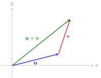
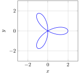
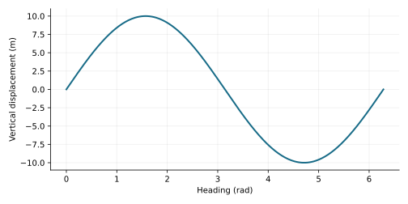

Vectors, Polar Coordinates, and Geometric Modeling
Opening context: directions matter
A displacement of five meters is not a complete description of motion unless its direction is also specified. Likewise, the location of a sensor relative to a rotating device is often more naturally described by a distance and angle than by two rectangular coordinates. Vectors and polar coordinates provide complementary languages for representing geometric quantities. This chapter builds on coordinate geometry (Chapter 3), functions (Chapters 4–5), trigonometry (Chapters 8–11), and parametric curves (Chapter 13). Its central goal is to connect exact mathematical reasoning with graphical and numerical exploration.
Learning outcomes
By the end of the chapter, students should be able to (1) represent and interpret vectors in component and magnitude–direction forms; (2) compute vector sums, differences, scalar multiples, magnitudes, and unit vectors; (3) use dot products to calculate angles and projections; (4) solve elementary force and displacement models; (5) convert between Cartesian and polar coordinates while attending to quadrants and nonuniqueness; (6) sketch basic polar curves and identify their symmetries; (7) use polar coordinates to describe motion; and (8) implement and interpret corresponding R and Python investigations.
How to use the computational laboratories
Each laboratory begins with a mathematical prediction, followed by R code and then Python code, in separate full-width listings. Students should complete the analytical work first, execute one language at a time, and compare results. All angles passed to trigonometric functions in the code are measured in radians.
Directed segments and vector notation
A scalar has magnitude but no direction; a vector has both magnitude and direction. Write \(\mathbf v=\langle a,b\rangle\) for the displacement \(a\) units horizontally and \(b\) units vertically. The vector from \(P(x_1,y_1)\) to \(Q(x_2,y_2)\) is \(\overrightarrow{PQ}=\langle x_2-x_1,y_2-y_1\rangle\). Two arrows at different locations represent the same free vector when their components agree. This is distinct from identifying a vector with a particular point.
Worked example. From \(P(-2,3)\) to \(Q(4,-1)\), the displacement is \(\langle6,-4\rangle\). Starting instead at \((1,2)\), the same displacement ends at \((7,-2)\).
Guided practice. Find \(\overrightarrow{AB}\) for \(A(3,-5)\) and \(B(-1,2)\); then draw a translated copy starting at the origin.
Vector addition, subtraction, and scalar multiplication
For \(\mathbf u=\langle u_1,u_2\rangle\) and \(\mathbf v=\langle v_1,v_2\rangle\), define \(\mathbf u+\mathbf v=\langle u_1+v_1,u_2+v_2\rangle\) and \(c\mathbf u=\langle cu_1,cu_2\rangle\). Subtraction is addition of the opposite vector. The head-to-tail and parallelogram constructions explain why componentwise addition describes consecutive displacements. The vector \(\mathbf0=\langle0,0\rangle\) has zero magnitude and no defined direction.
Worked example. If \(\mathbf u=\langle3,-2\rangle\) and \(\mathbf v=\langle-1,5\rangle\), then \(2\mathbf u-\mathbf v=\langle7,-9\rangle\).
Guided practice. Calculate \(3\mathbf u+2\mathbf v\) and sketch the corresponding resultant. Explain why multiplying by a negative scalar reverses direction.
Visual investigation 1.
Visual investigation: tip-to-tail addition. Draw \(\mathbf u=\langle3,1\rangle\) and \(\mathbf v=\langle-1,2\rangle\) on squared paper. First place both tails at the origin; then translate \(\mathbf v\) to start at the tip of \(\mathbf u\). Draw the resultant from the origin. Repeat the construction in reverse order. Explain geometrically why \(\mathbf u+\mathbf v=\mathbf v+\mathbf u\).
Reflection. Record a numerical prediction, a geometric explanation, and a method for checking your conclusion.
Magnitude, distance, and unit vectors
The magnitude of \(\mathbf v=\langle a,b\rangle\) follows from the Pythagorean theorem: \(\|\mathbf v\|=\sqrt{a^2+b^2}\). For \(\mathbf v\ne\mathbf0\), the vector \(\widehat{\mathbf v}=\mathbf v/\|\mathbf v\|\) has length one and the same direction. The distance formula is therefore the magnitude of a displacement vector. Distinguish a unit vector (dimensionless direction) from a physical displacement carrying units.
Worked example. For \(\mathbf v=\langle-6,8\rangle\), \(\|\mathbf v\|=10\) and \(\widehat{\mathbf v}=\langle-3/5,4/5\rangle\). Verify \(9/25+16/25=1\).
Guided practice. Normalize \(\langle5,12\rangle\) and explain why \(\mathbf0\) cannot be normalized.
Direction angles and trigonometric components
If a nonzero vector has magnitude \(r\) and direction angle \(\theta\) measured counterclockwise from the
positive \(x\) axis, then \(\mathbf v=\langle
r\cos\theta,r\sin\theta\rangle\). Conversely \(r=\sqrt{a^2+b^2}\) and \(\theta\) must be chosen in the correct
quadrant. The expression \(\arctan(b/a)\) alone can lose quadrant
information; numerical software often provides an atan2
function.
Worked example. A 20-newton force acting at \(150^\circ\) has components \(\langle20\cos150^\circ,20\sin150^\circ\rangle=\langle-10\sqrt3,10\rangle\) newtons.
Guided practice. Express a 12-meter displacement at \(240^\circ\) in exact component form.
Visual investigation 2.
Visual investigation: rotating a fixed-length vector. Sketch arrows of length 4 at angles \(0,\pi/6,\pi/2,\pi,3\pi/2\). Complete a table of their horizontal and vertical components. Explain why the endpoints form a circle and identify the maximum and minimum possible \(x\) components.
Reflection. Record a numerical prediction, a geometric explanation, and a method for checking your conclusion.
The dot product and the angle between vectors
The dot product is \(\mathbf u\cdot\mathbf v=u_1v_1+u_2v_2\). Geometry gives the equivalent identity \(\mathbf u\cdot\mathbf v=\|\mathbf u\|\|\mathbf v\|\cos\theta\) for nonzero vectors, where \(0\le\theta\le\pi\). One derivation expands \(\|\mathbf u-\mathbf v\|^2\) by components and compares with the law of cosines. Thus \(\cos\theta=(\mathbf u\cdot\mathbf v)/(\|\mathbf u\|\|\mathbf v\|)\); the denominator must be nonzero.
Worked example. \(\langle1,2\rangle\cdot\langle2,-1\rangle=0\). Since both are nonzero, the vectors are perpendicular.
Guided practice. Compute the angle between \(\langle1,0\rangle\) and \(\langle1,1\rangle\) exactly.
Orthogonality, projection, and component along a direction
Two nonzero vectors are perpendicular exactly when their dot product is zero. The scalar component of \(\mathbf u\) along \(\mathbf v\) is \((\mathbf u\cdot\mathbf v)/\|\mathbf v\|\). The vector projection is \(\operatorname{proj}_{\mathbf v}\mathbf u=((\mathbf u\cdot\mathbf v)/\|\mathbf v\|^2)\mathbf v\), provided \(\mathbf v\ne\mathbf0\). The remainder \(\mathbf u-\operatorname{proj}_{\mathbf v}\mathbf u\) is perpendicular to \(\mathbf v\).
Worked example. Project \(\mathbf u=\langle3,4\rangle\) onto \(\mathbf v=\langle1,0\rangle\). The result is \(\langle3,0\rangle\), leaving \(\langle0,4\rangle\) perpendicular to the horizontal axis.
Guided practice. Project \(\langle4,2\rangle\) onto \(\langle1,1\rangle\) and verify the orthogonality of the residual.
Visual investigation 3.
Visual investigation: projection geometry. Draw \(\mathbf u=\langle4,3\rangle\) and \(\mathbf v=\langle2,1\rangle\) from the origin. Drop a perpendicular from the tip of \(\mathbf u\) to the line spanned by \(\mathbf v\). Compute the projected vector and residual and compare the diagram with the dot-product formulas.
Reflection. Record a numerical prediction, a geometric explanation, and a method for checking your conclusion.
Applied vectors: resultant forces and navigation
A simplified planar force balance uses vector addition. If a force of magnitude \(F_1\) acts at angle \(\theta_1\) and another of magnitude \(F_2\) acts at \(\theta_2\), their resultant is \(\langle F_1\cos\theta_1+F_2\cos\theta_2,F_1\sin\theta_1+F_2\sin\theta_2\rangle\). An equilibrium force is the negative of this resultant. A force model must identify its reference axes and units. Navigation uses the same mathematics, although bearings are commonly measured clockwise from north rather than counterclockwise from east.
Worked example. Forces \(\langle8,0\rangle\) N and \(\langle0,6\rangle\) N produce a resultant of magnitude \(10\) N, at angle \(\arctan(6/8)\) above the positive horizontal axis.
Guided practice. Two displacements are 3 km east and 4 km north. Find the resultant and a return displacement.
Polar coordinates and nonunique representations
A polar coordinate pair \((r,\theta)\) represents a point a signed radial distance \(r\) along the direction \(\theta\). For \(r\ge0\), this is the usual distance-and-angle description. Polar coordinates are not unique: \((r,\theta)\) and \((r,\theta+2\pi k)\) describe the same point; \((r,\theta)\) and \((-r,\theta+\pi)\) also describe the same point. At the origin the angle is arbitrary. These subtleties matter when solving equations and interpreting plots.
Worked example. \((3,\pi/6)\) and \((-3,7\pi/6)\) represent the same point. Both convert to \((3\sqrt3/2,3/2)\).
Guided practice. Give three distinct polar descriptions of the Cartesian point \((-2,0)\).
Visual investigation 4.
Visual investigation: many names for one point. Plot \((2,\pi/3)\), \((2,7\pi/3)\), and \((-2,4\pi/3)\). Show that they coincide. Then mark \((0,\theta)\) for three distinct angles and explain the special role of the origin.
Reflection. Record a numerical prediction, a geometric explanation, and a method for checking your conclusion.
Converting between Cartesian and polar coordinates
The conversion formulas are \(x=r\cos\theta\), \(y=r\sin\theta\), and \(r^2=x^2+y^2\). For the standard choice \(r\ge0\), set \(r=\sqrt{x^2+y^2}\) and choose \(\theta\) from the signs of \(x\) and \(y\). When \(x\ne0\), \(\tan\theta=y/x\), but this ratio does not uniquely identify the quadrant.
Worked example. Cartesian \((-3,3)\) gives \(r=3\sqrt2\) and \(\theta=3\pi/4\) in \([0,2\pi)\). Conversely \((4,5\pi/6)\) gives \((-2\sqrt3,2)\).
Guided practice. Convert \((0,-5)\) to polar form with \(0\le\theta<2\pi\); convert \((6,-\pi/3)\) to Cartesian form.
Polar equations and elementary graphs
In polar coordinates, \(r=c\) with \(c>0\) describes a circle centered at the origin; \(\theta=\alpha\) describes a line through the origin when negative radii are allowed. Equations \(r=2a\cos\theta\) and \(r=2a\sin\theta\) convert to \((x-a)^2+y^2=a^2\) and \(x^2+(y-a)^2=a^2\). Graphs of \(r=f(\theta)\) should be built from an angle table, sign analysis, and symmetry, rather than treating \(r\) as a Cartesian vertical coordinate.
Worked example. For \(r=4\cos\theta\), multiply by \(r\): \(r^2=4r\cos\theta\), hence \(x^2+y^2=4x\) and \((x-2)^2+y^2=4\).
Guided practice. Convert \(r=6\sin\theta\) to Cartesian form and identify its center and radius.
Visual investigation 5.
Visual investigation: Cartesian and polar descriptions. Draw the circle \((x-2)^2+y^2=4\) and superimpose rays from the origin at angles \(0,\pi/6,\pi/3,\pi/2\). Use the polar equation \(r=4\cos\theta\) to locate intersections and explain what happens when \(\cos\theta<0\).
Reflection. Record a numerical prediction, a geometric explanation, and a method for checking your conclusion.
Rose curves, limacons, and spirals
The family \(r=a\cos(n\theta)\) or \(r=a\sin(n\theta)\) produces rose curves: for integer \(n>0\), odd \(n\) yields \(n\) petals and even \(n\) yields \(2n\) petals over a full tracing interval. Limacons \(r=a+b\cos\theta\) exhibit different shapes depending on \(|a/b|\), including inner loops when \(0<|a|<|b|\). The Archimedean spiral \(r=a+b\theta\) (for a specified angle interval) increases radial distance linearly with angle. Negative values of \(r\) are plotted in the opposite direction.
Worked example. \(r=2\cos(3\theta)\) has three petals of maximum radial length 2. At \(\theta=0\), \(r=2\); at \(\theta=\pi/6\), \(r=0\).
Guided practice. Predict the number of petals for \(r=3\sin(4\theta)\) and locate three angles where \(r=0\).
Polar symmetry and graphing cautions
A polar equation may be symmetric about the polar axis, the vertical axis, or the pole. Common algebraic checks include replacing \(\theta\) by \(-\theta\), \(\theta\) by \(\pi-\theta\), and \(r\) by \(-r\) (or \(\theta\) by \(\theta+\pi\)), respectively. A failed test does not by itself prove a graph lacks symmetry because polar representations are nonunique. Numerical plots also depend on sampling density: a coarse angle grid can miss narrow loops or crossings.
Worked example. Since \(\cos(-\theta)=\cos\theta\), the curve \(r=2+\cos\theta\) is symmetric about the polar axis.
Guided practice. Explain why a graph of \(r=\sin(2\theta)\) requires careful treatment of negative radii.
Visual investigation 6.
Visual investigation: symmetry and sampling. Sketch \(r=2\cos(3\theta)\) using a table with increments \(\pi/12\). Then repeat using only increments \(\pi/3\). Which features disappear from the coarse plot? Explain why graphing technology cannot replace mathematical analysis.
Reflection. Record a numerical prediction, a geometric explanation, and a method for checking your conclusion.
Polar motion and connections to parametric curves
A polar path \(r=r(t)\), \(\theta=\theta(t)\) becomes the Cartesian parametric path \(x(t)=r(t)\cos\theta(t)\) and \(y(t)=r(t)\sin\theta(t)\). For constant radius and increasing angle, the point travels on a circle; when radius changes, it may trace a spiral. The parameter \(t\) can represent time, but it need not. The geometric path alone does not specify speed or timing.
Worked example. \(r(t)=2\), \(\theta(t)=\pi t\) traces a circle of radius 2, counterclockwise, completing one revolution every 2 time units.
Guided practice. For \(r(t)=t\), \(\theta(t)=2\pi t\) on \(0\le t\le2\), find the Cartesian position at \(t=0,1/2,1,2\).
Vector modeling and measurement uncertainty
A mathematical model should identify which quantities are measured, the coordinate system, the units, and the assumptions. For example, displacement components estimated with error may change the resultant magnitude and direction. If \(\mathbf v=\langle a,b\rangle\), a small component perturbation \(\langle\delta a,\delta b\rangle\) changes the magnitude by at most \(\sqrt{(\delta a)^2+(\delta b)^2}\), by the reverse triangle inequality. This provides a useful error bound without calculus.
Worked example. If a displacement estimate is \(\langle3,4\rangle\) m and the total vector error is at most 0.2 m, its true magnitude lies between 4.8 and 5.2 m.
Guided practice. Explain why angle uncertainty can be large for vectors whose magnitudes are near zero.
Visual investigation 7.
Visual investigation: error and direction. Draw vectors \(\langle3,4\rangle\), \(\langle3.2,4\rangle\), and \(\langle3,4.2\rangle\). Estimate how their lengths and angles differ. Repeat with a very short vector \(\langle0.05,0.05\rangle\) and comparable component errors; discuss the difference in stability.
Reflection. Record a numerical prediction, a geometric explanation, and a method for checking your conclusion.
Calculus readiness: tangent directions and changing vectors
In calculus, a vector-valued position \(\mathbf r(t)=\langle x(t),y(t)\rangle\) has instantaneous velocity \(\mathbf r'(t)=\langle x'(t),y'(t)\rangle\). Before differentiating, estimate velocity by the secant vector \([\mathbf r(t+h)-\mathbf r(t)]/h\). For a circular path \(\mathbf r(t)=\langle R\cos t,R\sin t\rangle\), the secant approaches a tangent direction as \(h\to0\). The radius vector and tangent vector are perpendicular, foreshadowing dot-product arguments in calculus.
Worked example. At \(t=0\), compare \(\mathbf r(0)=\langle R,0\rangle\) with \(\mathbf r(h)=\langle R\cos h,R\sin h\rangle\) for small positive \(h\); the displacement points approximately upward.
Guided practice. Use \(h=0.1\) and \(h=0.01\) to estimate the tangent direction for \(R=3\) at \(t=0\).
Visual gallery: vectors and polar curves


The second graph is the three-petal rose \(r=2\cos(3\theta)\). Its Cartesian parameterization is \(x=r\cos\theta\), \(y=r\sin\theta\).
Computational laboratory A: vectors, magnitudes, and projections
Prediction. For \(\mathbf u=\langle4,3\rangle\) and \(\mathbf v=\langle2,1\rangle\), estimate the angle between the vectors and the length of the projection of \(\mathbf u\) onto \(\mathbf v\).
R code
# Laboratory A: vectors and projections
u <- c(4, 3)
v <- c(2, 1)
dot <- sum(u * v)
angle <- acos(dot / (sqrt(sum(u^2)) * sqrt(sum(v^2))))
projection <- dot / sum(v^2) * v
residual <- u - projection
print(list(angle_degrees=angle*180/pi, projection=projection, residual=residual, orthogonality=sum(residual*v)))
plot(c(0,u[1],v[1],projection[1]), c(0,u[2],v[2],projection[2]), type="n", xlim=c(0,5), ylim=c(0,4), asp=1, xlab="x", ylab="y", main="Vectors and projection")
arrows(0,0,u[1],u[2],col="blue",lwd=2); arrows(0,0,v[1],v[2],col="red",lwd=2); arrows(0,0,projection[1],projection[2],col="darkgreen",lwd=2)Python code
# Laboratory A: vectors and projections
import math
import numpy as np
import matplotlib.pyplot as plt
u = np.array([4., 3.]); v = np.array([2., 1.])
dot = float(np.dot(u, v))
angle = math.degrees(math.acos(dot/(np.linalg.norm(u)*np.linalg.norm(v))))
projection = dot/np.dot(v,v)*v
residual = u-projection
print('Angle (degrees):', angle, 'Projection:', projection, 'Residual:', residual)
print('Residual dot v:', np.dot(residual,v))
fig, ax = plt.subplots()
for vec, color, name in [(u,'blue','u'),(v,'red','v'),(projection,'green','projection')]:
ax.arrow(0,0,*vec,head_width=.13,length_includes_head=True,color=color,label=name)
ax.set(xlim=(0,5),ylim=(0,4),xlabel='x',ylabel='y',title='Vectors and projection')
ax.set_aspect('equal'); ax.grid(True); ax.legend(); fig.savefig('figures/labA_python.png',dpi=180,bbox_inches='tight')Interpretation. Compare exact and numerical values; verify the residual is perpendicular to \(\mathbf v\). What happens if the reference vector is zero?
Computational laboratory B: polar curves and coordinate conversion
Prediction. Sketch \(r=2\cos(3\theta)\) and \(r=1+2\cos\theta\) before running either script. Predict the number of petals and whether an inner loop occurs.
R code
# Laboratory B: polar curves
theta <- seq(0, 2*pi, length.out=1500)
r1 <- 2*cos(3*theta); r2 <- 1+2*cos(theta)
x1 <- r1*cos(theta); y1 <- r1*sin(theta)
x2 <- r2*cos(theta); y2 <- r2*sin(theta)
par(mfrow=c(1,2))
plot(x1,y1,type="l",asp=1,col="blue",xlab="x",ylab="y",main="Three-petal rose")
plot(x2,y2,type="l",asp=1,col="red",xlab="x",ylab="y",main="Limacon with inner loop")
par(mfrow=c(1,1))Python code
# Laboratory B: polar curves
import numpy as np
import matplotlib.pyplot as plt
theta = np.linspace(0, 2*np.pi, 1500)
fig, axes = plt.subplots(1,2,figsize=(10,4))
for ax, r, title in [(axes[0],2*np.cos(3*theta),'Three-petal rose'),(axes[1],1+2*np.cos(theta),'Limacon with inner loop')]:
ax.plot(r*np.cos(theta),r*np.sin(theta))
ax.set_aspect('equal'); ax.set_title(title); ax.set_xlabel('x'); ax.set_ylabel('y'); ax.grid(True)
fig.tight_layout(); fig.savefig('figures/labB_python.png',dpi=180,bbox_inches='tight')Interpretation. Explain how negative radial values are converted to Cartesian coordinates. Compare coarse and fine angular sampling.
Computational laboratory C: displacement modeling and uncertainty
Prediction. A nominal displacement is \(\langle3,4\rangle\) meters. If each component can vary by \(\pm0.2\) m, estimate the range of possible resultant lengths.
R code
# Laboratory C: component uncertainty, reproducible simulation
set.seed(14)
n <- 2000
x <- runif(n,2.8,3.2); y <- runif(n,3.8,4.2)
magnitude <- sqrt(x^2+y^2)
cat("Nominal magnitude:",5,"\n")
cat("Simulated min/max:",range(magnitude),"\n")
cat("Componentwise theoretical bounds:",sqrt(2.8^2+3.8^2),sqrt(3.2^2+4.2^2),"\n")
plot(x,y,asp=1,pch=16,cex=.25,col="gray50",xlab="Horizontal displacement (m)",ylab="Vertical displacement (m)",main="Component uncertainty")
points(3,4,col="red",pch=19,cex=1.3)Python code
# Laboratory C: component uncertainty, reproducible simulation
import numpy as np
import matplotlib.pyplot as plt
rng = np.random.default_rng(14)
n = 2000
x = rng.uniform(2.8,3.2,n); y = rng.uniform(3.8,4.2,n)
magnitude = np.hypot(x,y)
print('Nominal magnitude:',5)
print('Simulated min/max:',magnitude.min(),magnitude.max())
print('Componentwise theoretical bounds:',np.hypot(2.8,3.8),np.hypot(3.2,4.2))
fig, ax = plt.subplots()
ax.scatter(x,y,s=4,alpha=.35); ax.scatter([3],[4],s=55)
ax.set(xlabel='Horizontal displacement (m)',ylabel='Vertical displacement (m)',title='Component uncertainty')
ax.set_aspect('equal'); ax.grid(True); fig.savefig('figures/labC_python.png',dpi=180,bbox_inches='tight')Interpretation. Distinguish the componentwise uncertainty model from a bound on total vector error. State whether the simulation proves a universal bound.
Extended applied workshops with worked solutions
Workshop 1: Patient transport displacement
A hospital transporter moves a cart 40 m east and then 30 m north. Find the net displacement, its magnitude, and its direction from east.
Solution. \(\mathbf d=\langle40,30\rangle\) m; \(\|\mathbf d\|=50\) m; \(\theta=\tan^{-1}(3/4)\approx36.87^\circ\) north of east. The distance traveled is 70 m, which differs from the displacement magnitude.
Workshop 2: Resultant force
Two idealized planar forces are \(12\) N east and \(5\) N south. Find the resultant and the balancing force.
Solution. \(\mathbf F=\langle12,-5\rangle\) N; magnitude \(13\) N and direction approximately \(22.62^\circ\) south of east. The balancing force is \(\langle-12,5\rangle\) N.
Workshop 3: Sensor alignment and projection
A sensor reads \(\mathbf s=\langle6,2\rangle\) units, while its reference direction is \(\mathbf d=\langle3,4\rangle\). Find the component of the reading along the reference and the projected vector.
Solution. \(\mathbf s\cdot\mathbf d=26\), \(\|\mathbf d\|=5\), so the scalar component is \(26/5=5.2\). The projection is \((26/25)\langle3,4\rangle=\langle78/25,104/25\rangle\).
Workshop 4: Circular scanning geometry
An idealized rotating instrument traces points at radius 8 cm and angle \(\theta\) from a fixed horizontal axis. Find the Cartesian coordinates at \(\theta=\pi/3\), and the angle of the point \((-4,4\sqrt3)\) cm.
Solution. At \(\pi/3\), \((x,y)=(4,4\sqrt3)\) cm. The point \((-4,4\sqrt3)\) has radius 8 cm and principal angle \(2\pi/3\).
Workshop 5: Polar curve interpretation
A simplified geometric path has polar equation \(r=4\cos\theta\). Identify its Cartesian locus and explain why the graph is not a circle centered at the origin.
Solution. Multiply by \(r\) to obtain \(x^2+y^2=4x\), or \((x-2)^2+y^2=4\). The circle has center \((2,0)\) and radius 2; it passes through the pole.
Problem-solving clinic: selecting the right representation
Sketch the situation and state the coordinate axes, positive directions, and units.
Decide whether components, magnitude–direction form, or polar coordinates are most informative.
Convert angles to radians before using trigonometric software functions.
Use exact expressions when possible; round only after interpreting the result.
Check whether a computed angle is in the correct quadrant.
Distinguish a geometric path from a time-dependent motion model.
Check domain restrictions and special cases such as zero vectors and the pole.
Compare analytic answers with numerical and graphical evidence.
Guided practice studio
Activity A: reconstructing a vector
A vector has magnitude 10 and direction \(\theta\) with \(\cos\theta=-3/5\) and \(\sin\theta=4/5\). Find its components, identify its quadrant, and find a unit vector in the opposite direction.
Solution. \(\mathbf v=\langle-6,8\rangle\), quadrant II, opposite unit vector \(\langle3/5,-4/5\rangle\).
Activity B: orthogonal decomposition
Decompose \(\mathbf u=\langle5,1\rangle\) into a component parallel to \(\mathbf v=\langle1,1\rangle\) and a perpendicular remainder.
Solution. The projection is \((6/2)\langle1,1\rangle=\langle3,3\rangle\); remainder \(\langle2,-2\rangle\) has dot product zero with \(\mathbf v\).
Activity C: two polar representations
Find Cartesian coordinates for \((r,\theta)=(-4,\pi/6)\) and give an equivalent polar representation with nonnegative radius.
Solution. \((x,y)=(-2\sqrt3,-2)\), equivalent to \((4,7\pi/6)\).
Activity D: identifying a polar circle
Show that \(r=6\sin\theta\) is a circle and determine its center, radius, and intercepts.
Solution. \(r^2=6r\sin\theta\) implies \(x^2+y^2=6y\), so \(x^2+(y-3)^2=9\). The circle meets the \(y\) axis at \((0,0)\) and \((0,6)\) and touches the \(x\) axis at the origin.
Independent practice with worked checks
Compute \(\langle2,-3\rangle+\langle-5,7\rangle\). Check: \(\langle-3,4\rangle\).
Find the magnitude of \(\langle8,15\rangle\). Check: \(17\).
Normalize \(\langle-3,4\rangle\). Check: \(\langle-3/5,4/5\rangle\).
Evaluate \(\langle2,5\rangle\cdot\langle3,-1\rangle\). Check: \(1\).
Convert \((2,\pi/2)\) from polar to Cartesian. Check: \((0,2)\).
Convert \((-1,-\sqrt3)\) to polar form with \(r>0\) and \(0\le\theta<2\pi\). Check: \((2,4\pi/3)\).
Convert \(r=2\cos\theta\) to Cartesian form. Check: \((x-1)^2+y^2=1\).
Determine whether \(\langle1,3\rangle\) and \(\langle3,-1\rangle\) are perpendicular. Check: yes, dot product zero.
Deeper investigation: deriving the dot-product formula
The formula \(\mathbf u\cdot\mathbf v=\|\mathbf u\|\|\mathbf v\|\cos\theta\) is not an arbitrary computational rule. To understand why it works, start with the triangle formed by \(\mathbf u\), \(\mathbf v\), and \(\mathbf u-\mathbf v\). The law of cosines gives \[\|\mathbf u-\mathbf v\|^2=\|\mathbf u\|^2+\|\mathbf v\|^2-2\|\mathbf u\|\|\mathbf v\|\cos\theta.\] On the other hand, expand the left side component by component: \[\begin{aligned} \|\mathbf u-\mathbf v\|^2&=(u_1-v_1)^2+(u_2-v_2)^2\\&=u_1^2+u_2^2+v_1^2+v_2^2-2(u_1v_1+u_2v_2). \end{aligned}\] Comparing the two expressions and canceling common terms yields the geometric formula. This derivation also explains why the dot product is positive for acute angles, zero for right angles, and negative for obtuse angles.
Guided derivation. Take \(\mathbf u=\langle2,1\rangle\) and \(\mathbf v=\langle-1,2\rangle\). Compute all three squared side lengths, use the law of cosines, and show that \(\theta=\pi/2\).
Concept check. Can two vectors have a negative dot product even when all four component magnitudes are positive? Explain the distinction between component magnitudes and signed components.
Deeper investigation: building a polar graph by hand
Consider the polar curve \(r=1+2\cos\theta\). To graph it accurately, start with a table rather than a memorized picture. At \(\theta=0\), \(r=3\); at \(\theta=\pi/2\), \(r=1\); at \(\theta=\pi\), \(r=-1\); at \(\theta=3\pi/2\), \(r=1\). A negative radius at \(\theta=\pi\) means plotting one unit in the opposite direction, namely at \((1,0)\). The curve passes through the pole when \(1+2\cos\theta=0\), or \(\theta=2\pi/3,4\pi/3\). Between these angles, the radius is negative, and the curve traces an inner loop.
Guided practice, step 1. Evaluate \(r\) at \(\theta=\pi/3,2\pi/3,5\pi/6,\pi,7\pi/6,4\pi/3,5\pi/3\). Record each point as \((r,\theta)\) and convert it to Cartesian coordinates.
Guided practice, step 2. Sketch the points and connect them in increasing order of \(\theta\). Use symmetry about the polar axis to check your sketch. Label the crossings at the pole and the inner loop.
Guided practice, step 3. Compare this curve with \(r=2+\cos\theta\). Explain why the second curve does not have an inner loop. Your explanation should use the minimum possible radius, not just the appearance of a graph.
Additional practice: representations and reasoning
Exercise set A: vector interpretation
Two students describe the same motion: one says “8 meters northeast,” while another gives the vector \(\langle4\sqrt2,4\sqrt2\rangle\) meters. Explain why these descriptions agree.
A vector has components \(\langle-8,-6\rangle\). Compute its magnitude, identify its quadrant, and give a direction angle in degrees.
A wind vector \(\langle3,-4\rangle\) m/s acts on an object moving at \(\langle7,2\rangle\) m/s relative to still air. Under a simple additive-velocity model, find the resulting velocity and speed.
Explain why the scalar projection of \(\mathbf u\) onto \(\mathbf v\) can be negative even though the magnitude of the vector projection is nonnegative.
Exercise set B: polar reasoning
Compare \((2,\pi/4)\), \((-2,5\pi/4)\), and \((2,9\pi/4)\). Are they the same point? Verify using Cartesian coordinates.
Convert \(x^2+y^2=8y\) to a polar equation and identify the curve’s center and radius.
A sensor rotates through one full revolution at fixed radius \(r=5\) cm. Write its position as a function of angle, then as a function of time if the angular speed is \(\pi/3\) radians per second.
Explain why \(r=\theta\) and \(r=\theta+2\pi\) are not the same polar graph even though angles differing by \(2\pi\) point in the same direction.
Reflection and synthesis
Write a paragraph explaining when you would prefer (a) rectangular vector components, (b) magnitude–direction form, and (c) polar coordinates. Give one scientific or geometric example for each choice. Include a statement about units and the limitations of a mathematical model.
Chapter review exercises
For each problem, show the mathematical steps, label units where applicable, and check whether a graphical interpretation agrees with the algebra.
Find \(\overrightarrow{PQ}\) for \(P(-4,2)\) and \(Q(3,-5)\).
Compute \(2\langle1,-4\rangle-3\langle-2,5\rangle\).
Find the length of \(\langle-7,24\rangle\).
Find a unit vector parallel to \(\langle8,-6\rangle\).
Find the endpoint of a vector \(\langle-5,9\rangle\) starting at \((4,-2)\).
Express a vector of magnitude 16 and direction \(\pi/6\) in components.
Find the direction angle of \(\langle-1,1\rangle\) in \([0,2\pi)\).
Find the angle between \(\langle1,0\rangle\) and \(\langle-1,1\rangle\).
Find \(\langle2,-1\rangle\cdot\langle-3,4\rangle\).
Determine whether \(\langle3,2\rangle\) and \(\langle-4,6\rangle\) are orthogonal.
Project \(\langle4,0\rangle\) onto \(\langle1,1\rangle\).
Decompose \(\langle1,5\rangle\) into parts parallel and perpendicular to \(\langle0,1\rangle\).
Add forces of 5 N east and 12 N north; find the magnitude.
Find the balancing force for \(\langle-3,7\rangle\) N.
Convert polar \((5,\pi/3)\) to Cartesian coordinates.
Convert polar \((-2,\pi/2)\) to Cartesian coordinates.
Convert Cartesian \((3,-3)\) to polar form with \(r\ge0\).
Give two polar descriptions of \((-4,0)\).
Explain why the polar angle at the origin is not unique.
Convert \(r=8\cos\theta\) to a Cartesian equation.
Convert \(r=4\sin\theta\) to a Cartesian equation.
Sketch \(r=3\) and identify its Cartesian equation.
Predict the number of petals of \(r=\cos(5\theta)\).
Predict the number of petals of \(r=2\sin(4\theta)\).
Find three zeros of \(r=2\cos(3\theta)\) on \([0,2\pi)\).
Describe the symmetry of \(r=2+\cos\theta\).
Convert \(r(t)=2\), \(\theta(t)=t\) to Cartesian parametric equations.
Find the location of \(r(t)=t\), \(\theta(t)=\pi t\) at \(t=1\).
Explain the difference between distance traveled and net displacement.
Explain why \(\tan^{-1}(y/x)\) may give an incorrect quadrant.
Estimate the secant velocity of \(\mathbf r(t)=\langle\cos t,\sin t\rangle\) at \(t=0\) using \(h=0.1\).
Explain why \(\operatorname{proj}_{\mathbf0}\mathbf u\) is undefined.
Find the range of possible magnitudes when \(\|\mathbf v\|=5\) and the total vector error is at most 0.3.
Write a short modeling critique of a constant-speed circular motion assumption.
Compare a polar graph sampled at 12 angles and at 360 angles; describe possible numerical artifacts.
Calculus-readiness checkpoint
For \(\mathbf r(t)=\langle2\cos t,2\sin t\rangle\), compute \([\mathbf r(h)-\mathbf r(0)]/h\) for \(h=0.1\) and \(h=0.01\); identify the limiting direction.
Explain how the dot product can test whether a proposed velocity vector is tangent to a circle.
A polar path is \(r=1+\theta\) for \(0\le\theta\le\pi\). Write Cartesian parametric equations and discuss how the radial distance changes.
State one question about a vector-valued motion model that cannot be answered from the geometric path alone.
Looking ahead
Chapter 15 introduces rates of change, difference quotients, and limits. The vector and polar representations developed here will reappear in differential and multivariable calculus, where positions become functions of time and tangent directions become derivatives.
Extended application: Directional motion
A mobile robot travels 10 meters at a heading measured counterclockwise from the positive horizontal axis. The quantities in this investigation are illustrative rather than measured observations.
Formulating the mathematical model
The proposed relationship is \[Y(\theta)=10\sin\theta.\] Before calculating, identify the input and output, their units, and the interval on which the model is being studied. Distinguish the mathematical domain from the practical domain. The numerical study uses inputs from \(0\) to \(6.28\).
Example 1: Analytical investigation. Find both displacement components at \(\pi/6\) and verify the magnitude. Find headings with vertical displacement 5 m.
Worked solution. Components \((5\sqrt3,5)\); magnitude 10. Headings \(\pi/6\) and \(5\pi/6\) modulo \(2\pi\).
Connecting numerical and graphical representations
| Heading (rad) | Vertical displacement (m) |
|---|---|
| 0 | 0 |
| 1.57 | 10 |
| 3.14 | -2.068e-12 |
| 4.71 | -10 |
| 6.28 | 4.136e-12 |

Interpretation. Compare the tabulated values with the graph. Identify the intervals over which the output increases or decreases, and distinguish a sampled extremum from an exact analytical extremum. Explain whether interpolation and extrapolation have the same justification in this setting.
R implementation
The following standalone script defines the model, generates predictions, and draws a labeled graph. Read the formula before running the code. The sampled range is a numerical diagnostic, not a proof of the exact range.
# Applied investigation: Directional motion
# 1. Define the input domain and model
x <- seq(0, 6.28318530718, length.out = 301)
y <- 10*sin(x)
# 2. Inspect numerical predictions
idx <- unique(round(seq(1, length(x), length.out = 5)))
print(data.frame(input = x[idx], output = y[idx]))
# 3. Visualize the model with labeled axes
plot(x, y, type = "l", lwd = 2, col = "#176B87",
xlab = "Heading (rad)", ylab = "Vertical displacement (m)")
grid()
# 4. Check the sampled output range
print(range(y))Python implementation
Repeat the same investigation using NumPy arrays and Matplotlib. Compare the printed predictions with the R output, allowing for rounding.
# Applied investigation: Directional motion
import numpy as np
import matplotlib.pyplot as plt
# 1. Define the input domain and model
x = np.linspace(0, 6.28318530718, 301)
y = 10*np.sin(x)
# 2. Inspect numerical predictions
idx = np.unique(np.linspace(0, len(x)-1, 5).round().astype(int))
print(np.column_stack((x[idx], y[idx])))
# 3. Visualize the model with labeled axes
fig, ax = plt.subplots(figsize=(7, 3.6))
ax.plot(x, y, "-", color="#176B87", linewidth=2)
ax.set(xlabel="Heading (rad)", ylabel="Vertical displacement (m)")
ax.grid(alpha=0.22)
ax.spines[["top", "right"]].set_visible(False)
fig.tight_layout()
plt.show()
# 4. Check the sampled output range
print(np.min(y), np.max(y))Guided practice: checking the model
Calculate the outputs at the two endpoints by hand. Compare them with the numerical table.
Select an interior input not listed in the table. Predict the output before evaluating it in either language.
Explain the meaning of the difference between the two endpoint outputs, including units. If appropriate, calculate the average rate of change.
Identify a physical assumption of the model and describe a circumstance in which it would fail.
Chapter project: investigating Directional motion
Prepare a short technical report for a reader who has not studied the model. Use the preceding case as a starting point, but develop your own investigation rather than merely reproducing the worked example.
State a quantitative question that can be answered using the model. Define all variables, units, and restrictions.
Modify one meaningful numerical parameter in the formula. Explain what the change represents in the original context. Derive the revised formula and predict the direction of change before computing.
Compare the original and revised models at five common admissible inputs. Present a labeled table and explain the largest difference in the table.
Produce a graph containing both models on the same axes. Use a legend and distinguish the curves with line styles or markers. Explain the shape and any intersections.
Solve your quantitative question algebraically where possible. Verify the result using R and Python; report any differences due to numerical precision.
Discuss at least two limitations. Describe what measurements would be needed to assess the model in practice. Do not present simulated predictions as empirical evidence.
Project deliverables and assessment
Submit a two- to three-page report, the two runnable scripts, and the labeled figure. The report should stand on its own without requiring the reader to inspect the code.
| Criterion | Points |
|---|---|
| Mathematical formulation and domain | 20 |
| Analytical reasoning and verification | 25 |
| Reproducible R and Python computations | 20 |
| Graph and table quality | 15 |
| Interpretation and limitations | 20 |
| Total | 100 |
Companion scripts
Interactive investigation: Vector components
Enable JavaScript to explore the model.
Explore and explain: Calculate the magnitude and direction; explain the zero vector.